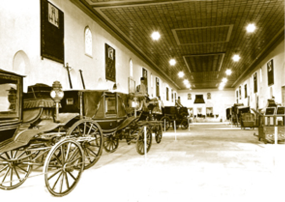

HAS AHUR (ISTABL-I AMİRE) VE PADİŞAH ATLARI
Beşir Ağa Camii’nin yanından başlayan Has Ahur, Zülüflü Baltacılar Koğuşu’na kadar devam eder. Sarayın diğer bölümlerinden farklı olarak düz ve sanatsız bir şekilde inşa edilmiştir. Has Ahur’da adından da anlaşılacağı üzere padişah ve yakınlarının atları bulunur. Bina dört bölmelidir. Bu bölümlerin ilkinde Raht Hazinesi (Ahur Hazinesi) bulunur. Raht Hazinesi’nde padişahların kullandıkları koşum takımları vardır. Pahalı mücevherlerle süslü, altın ve gümüşten mamul olan büyük kıymette eyerler, kırbaçlar, üzengiler, gemler, at başlıkları gibi eserler Raht Hazinesi defterlerine kaydedilir, Mühr-i Hümâyûn ile mühürlenir ve burada saklanırdı. Maliyenin bozulmaya başladığı 17. yüzyıldan itibaren Raht Hazinesi’nden altın ve gümüş birtakım eserler para basılması için darphâneye gönderilmiştir. Raht Hazinesi, daha sonraki dönemlerde Baltacılar Mescidi olarak kullanılmıştır.
Has Ahur orta kapısının bulunduğu kısımda hükümdar, şehzadeler ve diğer hanedan mensupları için iki yüze yakın at bulunmaktaydı. Bu atlar görünüş, kuvvet bakımından olduğu kadar şecere olarak da imparatorluğun ihtişamına ve padişahın hâkimiyetine yakışır hayvanlardı. Atlar hızlı koşmaları ve önlerine çıkan engellerin üzerinden atlamaları için serahurlar tarafından hususi bir eğitime tâbi tutulurlardı.
Padişahların Topkapı Sarayı’nı kullanmamaya başlamalarından itibaren Has Ahur, Dolmabahçe’ye, günümüzde İnönü Stadyumu’nun bulunduğu mevkie taşınmıştır.
Sarayda bulunan tek ahır Has Ahur değildi. Bunlar dışında da ahırlar vardı ki en meşhurları bugün Ahırkapı olarak anılan bölgede ve sarayın biraz dışında bulunurdu. Saray halkına ait at sayısı ise binden fazlaydı. Atlardan başka sarayda katır ve deve gibi binek hayvanları da bulunurdu.
Has Ahur’un idaresi mirahur (imrahur, emir-i ahur) denilen vazifelilere aitti. Mirahurluk mühim bir makam olup Osmanlı devlet bürokrasisi içinde yükselmeye açıktı. Nitekim mirahurluktan sadrazamlığa kadar yükselen devlet adamları olmuştur.
Has Ahur halkından olan saraçlar, günümüzde unutulmaya yüz tutmuş bir mesleği, eyer ve koşum takımlarını yaparlardı. Eyer yapımındaki ustalıkları dillere destan olan saraçlar, sefer zamanında da ordu ile birlikte sefere katılırlardı. Bunlar dışında Has Ahur halkı içinde veterinerlik yapan, at nallayan ve iğdiş yapan nalbant grupları, katırlara bakan harbendeler ile develere bakan deveciler gibi pek çok vazifeli kimse vardı.

Sarayın müze olarak kullanıldığı ilk yıllarda Has Ahur’da sergilenen saltanat arabaları
Sarayda Sultan IV. Murad gibi atlara çok düşkün padişahların dönemlerinde Has Ahur büyük rağbet görmüştür. 17. yüzyılın meşhur söz ustalarından Şair Nef’i’nin meşhur Kaside-i Rahşiyye’sinde anlattığı Sultan IV. Murad’ın atları; Ağaalacası, Dağlar Delisi, Celaliyağzı ve Tayyar bu ahırlarda yetiştirilmiştir. Sultanın bu atlardan en çok Ağaalacası’nı sevdiği bilinir. Sultan IV. Murad’ın vefatı üzerine eski bir Türk geleneği olarak Has Ahur’dan sultanın atları cenazenin önünde eyerleri ters bağlanmış olarak yürütülmüştür.